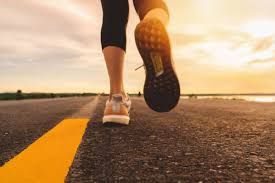

Aqui é onde você encontra todos os ítens mais novos e modernos do seu esporte preferido
A corrida é uma prática corporal que envolve os músculos dos membros inferiores para promover o deslocamento do corpo. A corrida está relacionada a diferentes aspectos da humanidade, seja enquanto forma de recreação, ritual festivo ou modalidade esportiva. Correr é uma das ações mais antigas do ser humano, uma vez que na pré-história a prática era essencial para a subsistência humana, seja para a caça ou para a fuga de animais. Entre as provas de corrida estão aquelas praticadas dentro do atletismo, divididas em modalidades de velocidade e de resistência. Há também as corridas realizadas em diferentes espaços, como a rua, montanhas e terrenos irregulares.